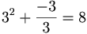

De: La Frikipedia, la enciclopedia extremadamente seria.
De: La Frikipedia, la enciclopedia extremadamente seria. De: La Frikipedia, la enciclopedia extremadamente seria.
| De la serie a quién rezarle: | |||
| Ahura Mazda | |||
| |||
| ¿Quiénes lo adoran? | Los mazdeístas, cananeos, persas, iraníes, parsis | ||
|---|---|---|---|
| Área de influencia | ¡Tudo o mundo pá! | ||
| No puede faltarle | Un BUEN fuego | ||
| ¿Bueno o malo? | Bueno, por supuesto lo más y mejor | ||
| Sus poderes | BENIGNSÍSISISISIMOSSS | ||
| Dioses y héroes amigos | Los buenos | ||
| Dioses y héroes enemigos | Los malos | ||
| Le gusta que digas la verdad | |||
Ahura Mazda es DIOS/A del Universo. Es buen@, misericordios@ y buen@. Creadora/a de todo lo bueno y bello.
Al principio de los eones solo existía Ahura Mazda. Para no aburrirse como el protagonista de "Johnny cogió su fusil" creó el Universo.
Como no sabía por dónde empezar (¡coño, era la primera vez que alguien creaba!), primero creó la felicidad. Para ponerla en un sitio y que le diese cosica güena a las visitas pues creó el mueble-bar, que oye también sirve porque si las visitas entran sedientas. Pero aquello no se sostenía por ningún lado, así que creó el suelo. Pa darle algo de vidilla le puso una lona con manchas de... encima, y vio Ahura Mazda que era bueno.
Pero aquello solo le satisfizo una millonésima de nanosegundo, así que expandió el suelo, le dio formas caprichosas y con un poquito de papel albal le hizo un riachuelo. ¡Que bien había creado el primer Belén de la History! (uy, no, que eso es otra historia). Aquello le convenció de seguir adelante, así que creó varios miles de suelos y papeles de albal. Para ordenarlo todo un poco, que luego se mosquea la parienta, creó los planetas y para poder ver mejor creó el sol, la luna y las estrellas y así ya tenía todos los suelos y ríos de albal catalogados por planetas. Para poder meter alguna probabilidad de sorpresa se hizo la siguiente ecuación:

Así, si te lees el Corán al revés, como hacen los musulmanes chiitas, hallarás que 3 es el número divino (que no gay) por excelencia, ya que Dios tiene tres "ojos" y tres dedos en cada hombro. Gracias a la lógica pudo saber que dentro de unos cuantos miles de eones ya no tendría tantos seguidores por culpa de la Wikipedia, pero eso no le preocupaba ya que no sabía si era bueno o malo.
Si te lees la Biblia colgado boca abajo hallarás que 3 es el múltiplo que difiere en cada versión que ofrecen todos los evangelios sobre la vida de Nyarlathotep y sus amoríos con el Rey David.
Así pues, Ahura Mazda había creado unas cuantas galaxias, pero como vio que era demasiado trabajo para él, creó al ser humano. Sin embargo al ver que no daba comunicado con él, Ahura Mazda creó a los ángeles para que hicieran de mensajeros. A estos les dio parte de todo el conocimiento para que fueran dándoselo a los humanos por raciones, ya que si un humano entra en el conocimiento de TODO de repente es sabido que le estalla la cabeza (como le pasó a Hitler) o los vuelve tarumba (como le pasó a Aznar).
Ahura Mazda creó a una serie de compis de trabajo pa poder darle al palique superficial y frívolo (todo dios tiene que desahogarse de vez en cuando ¿no?).
Gracias a estos dos personajillos los arios se dieron a emigrar a otros países (excepto Alemania, pasaron por todos, incluso por el culo del mundo).
Estando un día tomando el sol Ahura Mazda le visitó Angra Mainyu, o Arihmán, y comenzaron a discutir:
Dicen que desde entonces Ahura Mazda ya no recibe más al gran malvado y por eso pasó lo que pasó en el siglo XX: que los USA dominan el mundooooo por el bien de todos.
Zaratustra era un cura de Irán que iba todos los días a prender fuego al monte. Era pirómano, pero claro, en la Antigüedad no había psicólogos... y vio un día que la zarza a la que le había prendido candela no ardía, crepitaba e iluminaba eso sí, pero no se consumía ni olía a la concha de tu madre. Ahura Mazda se le había aparecido y le dio el siguiente mensaje:
Zaratustra quedó perplejo y corrió montaña abajo a contárselo a todos, pero sólo pudo contárselo a Nietzche, porque acto seguido llegó la Diosa y lo secuestró para exprimirle la banana con el permiso de Ahura Mazda que le gusta todo lo bueno... ¡y eso era BUENO!
Autor(es):